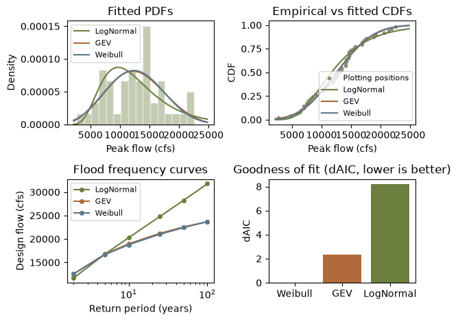

import matplotlib.pyplot as plt
import numpy as np
import pandas as pd
import corehydropy as ch21. Flood frequency analysis
Ported from flood_frequency_analysis.py in the USACE-RMC Numerics-Python-Examples repository (0BSD licensed). The upstream file is a standalone script, not a notebook: it drives the C# Numerics.dll through pythonnet, prints two tables to the terminal, and pops up a figure. This version uses corehydropy, whose compiled core is a validated C++ port of the same library, so the deterministic fits and tables below are the values that script prints. The R version of this example uses the same core and prints the same numbers.
What you’ll learn
- Fit several candidate distributions to annual peak flows, each with the estimation method the upstream script uses.
- Rank the fits and pick a model.
- Build a design-flow table at standard return periods and plot frequency curves.
Setup
The upstream script opens with roughly fifty lines of .NET plumbing: loading the CoreCLR runtime, resolving Numerics.dll from the NuGet cache, and converting NumPy arrays to System.Array[Double]. None of that exists here.
The data
Forty-eight years of annual peak flows in cubic feet per second, hardcoded in the upstream script.
peak_flows = np.array(
[
6290, 2700, 13100, 16900, 14600, 9600, 7740, 8490, 8130, 12000,
17200, 15000, 12400, 6960, 6500, 5840, 10400, 18800, 21400, 22600,
14200, 11000, 12800, 15700, 4740, 6950, 11800, 12100, 20600, 14600,
14600, 8900, 10600, 14200, 14100, 14100, 12500, 7530, 13400, 17600,
13400, 19200, 16900, 15500, 14500, 21900, 10400, 7460,
],
dtype=float,
)
print(f"n = {peak_flows.size}, min = {peak_flows.min():,.0f}, "
f"mean = {peak_flows.mean():,.0f}, max = {peak_flows.max():,.0f} cfs")n = 48, min = 2,700, mean = 12,665, max = 22,600 cfsFit three candidate models
The upstream script calls dist.Estimate(data, ParameterEstimationMethod.X) on three freshly constructed C# objects. Here Distribution.fit(family, data, method=) does the same in one call, with the same three methods: LogNormal by maximum likelihood, GEV by L-moments, Weibull by maximum likelihood. (GEV also has a dedicated gev_fit helper whose bespoke path carries quantile standard errors.)
As in the C# library, LogNormal is the base-10 family, so its two parameters are the mean and standard deviation of log10(flow).
ln = ch.Distribution.fit("LogNormal", peak_flows, method="mle")
gev = ch.Distribution.fit("GeneralizedExtremeValue", peak_flows, method="lmom")
wb = ch.Distribution.fit("Weibull", peak_flows, method="mle")
models = {"LogNormal": ln, "GEV": gev, "Weibull": wb}
for name, dist in models.items():
pars = ", ".join(
f"{pn} = {p:.6g}" for pn, p in zip(dist.parameter_names["short"], dist.params)
)
print(f"{name:>9}: {pars}")LogNormal: µ = 4.06743, σ = 0.186794
GEV: ξ = 10916.2, α = 4683.92, κ = 0.251455
Weibull: λ = 14197.3, κ = 2.98284Goodness of fit
The upstream script ranks the fits with the Kolmogorov-Smirnov statistic from Numerics.Data.Statistics.GoodnessOfFit. That helper is not part of the ported API, so this version ranks by log-likelihood and AIC instead. The log-likelihoods are the exact values the script also prints, and the conclusion is the same either way: Weibull edges out GEV, and LogNormal trails.
n_params = {name: len(dist.params) for name, dist in models.items()}
fit_df = pd.DataFrame(
{
"Model": name,
"LogLikelihood": (ll := dist.log_likelihood(peak_flows)),
"AIC": 2 * n_params[name] - 2 * ll,
}
for name, dist in models.items()
).sort_values("AIC").reset_index(drop=True)
fit_df["dAIC"] = fit_df["AIC"] - fit_df["AIC"].min()
print("Model fit summary (lower AIC is better):")
print(fit_df.to_string(index=False, float_format=lambda v: f"{v:,.4f}"))Model fit summary (lower AIC is better):
Model LogLikelihood AIC dAIC
Weibull -473.0458 950.0917 0.0000
GEV -473.2227 952.4453 2.3536
LogNormal -477.1525 958.3050 8.2133The packages also ship this ranking as a one-liner: ch.fit_distributions fits all 15 supported candidates by maximum likelihood and returns AIC, BIC, and RMSE for each. (It refits GEV by MLE, so its AIC differs slightly from the L-moment fit above.)
ranking = pd.DataFrame(ch.fit_distributions(peak_flows)).sort_values("aic")
print(ranking.head(5).to_string(index=False, float_format=lambda v: f"{v:,.2f}")) distribution aic bic rmse converged
Weibull 950.09 953.83 560.20 True
Normal 951.12 954.86 585.08 True
LogPearsonTypeIII 951.47 957.09 548.62 True
GeneralizedExtremeValue 952.31 957.92 563.40 True
PearsonTypeIII 952.94 958.55 560.74 TrueDesign flow table
Design flows at the standard return periods. A T-year event has annual exceedance probability 1/T, so the design flow is the quantile at 1 - 1/T; the upstream script’s InverseCDF(p) is quantile(p) here.
return_periods = np.array([2, 5, 10, 25, 50, 100])
probs = 1.0 - 1.0 / return_periods
design = pd.DataFrame(
{name: [dist.quantile(p) for p in probs] for name, dist in models.items()},
index=pd.Index(return_periods, name="ReturnPeriod"),
)
print("Design flow table (cfs):")
print(design.round(1).to_string())Design flow table (cfs):
LogNormal GEV Weibull
ReturnPeriod
2 11679.6 12556.2 12555.7
5 16774.1 16768.8 16653.0
10 20268.2 18965.6 18777.5
25 24799.7 21209.5 21009.4
50 28252.5 22560.5 22428.9
100 31767.1 23684.9 23689.6The three models agree closely through the 10-year event and then diverge: the unbounded LogNormal keeps climbing while the L-moment GEV (positive shape, so upper bounded) and Weibull flatten. This tail disagreement is exactly why flood frequency practice cares so much about distribution choice.
Visualizing the fits
The upstream script ends with a 2x2 figure: fitted PDFs over a histogram, fitted CDFs against the empirical CDF, the frequency curves, and a goodness-of-fit comparison. Two substitutions here: the empirical CDF uses Weibull plotting positions i / (n + 1) from ch.plotting_positions instead of the script’s naive i / n (which forces the largest observation to probability 1), and the goodness-of-fit panel shows dAIC instead of the unported KS statistic.
colors = {"LogNormal": "#6b7f3f", "GEV": "#b06a3b", "Weibull": "#5b7a8c"}
sorted_flows = np.sort(peak_flows)
pp = np.asarray(ch.plotting_positions(peak_flows.size))
x_grid = np.linspace(peak_flows.min() * 0.8, peak_flows.max() * 1.1, 500)
fig, axes = plt.subplots(2, 2)
# 1) Histogram + fitted PDFs
axes[0, 0].hist(peak_flows, bins=16, density=True, color="#6b7f3f",
edgecolor="white", alpha=0.4)
for name, dist in models.items():
axes[0, 0].plot(x_grid, [dist.pdf(x) for x in x_grid],
color=colors[name], label=name)
axes[0, 0].set_title("Fitted PDFs")
axes[0, 0].set_xlabel("Peak flow (cfs)")
axes[0, 0].set_ylabel("Density")
axes[0, 0].legend(fontsize=8)
# 2) Plotting positions + fitted CDFs
axes[0, 1].plot(sorted_flows, pp, "o", color="#8c8c7a", ms=3,
label="Plotting positions")
for name, dist in models.items():
axes[0, 1].plot(x_grid, [dist.cdf(x) for x in x_grid], color=colors[name],
label=name)
axes[0, 1].set_title("Empirical vs fitted CDFs")
axes[0, 1].set_xlabel("Peak flow (cfs)")
axes[0, 1].set_ylabel("CDF")
axes[0, 1].legend(fontsize=8)
# 3) Frequency curves
for name in models:
axes[1, 0].plot(return_periods, design[name], marker="o", ms=4,
color=colors[name], label=name)
axes[1, 0].set_xscale("log")
axes[1, 0].set_title("Flood frequency curves")
axes[1, 0].set_xlabel("Return period (years)")
axes[1, 0].set_ylabel("Design flow (cfs)")
axes[1, 0].legend(fontsize=8)
# 4) Goodness-of-fit comparison
axes[1, 1].bar(fit_df["Model"], fit_df["dAIC"],
color=[colors[m] for m in fit_df["Model"]])
axes[1, 1].set_title("Goodness of fit (dAIC, lower is better)")
axes[1, 1].set_ylabel("dAIC")
plt.tight_layout()
plt.show()
What the packages add
The upstream script assembles this analysis by hand from Numerics building blocks. The packages also ship complete flood-frequency workflows: ch.bulletin17c_analysis runs the Bulletin 17C log-Pearson Type III analysis (the US federal standard, including confidence intervals), and ch.univariate_analysis fits any family by Bayesian MCMC with a full credible band. The 100-year estimate below lands between the bounded GEV/Weibull tails and the LogNormal tail, and comes with uncertainty attached:
b17c = ch.bulletin17c_analysis(peak_flows)
i = b17c["exceedance_probabilities"].index(0.01)
q100 = 10 ** b17c["point_estimates"][i] # the B17C curve is tabulated in log10 space
print(f"Bulletin 17C 100-yr flow: {q100:,.0f} cfs "
f"(90% CI {b17c['lower_ci'][i]:,.0f} to {b17c['upper_ci'][i]:,.0f})")Bulletin 17C 100-yr flow: 23,219 cfs (90% CI 17,728 to 28,969)Reproduction check
The upstream file is a script with no committed outputs, so there are no embedded numbers to quote; it prints its fit summary and design-flow table when run against the C# library. Every quantity in this example is deterministic (no sampling), so the ported pipeline reproduces those printed tables exactly. The assertions below pin this port’s values, which the R twin asserts literal for literal, and check the quantile/CDF round trip for internal consistency.
| Quantity | Upstream C# | This port | Status |
|---|---|---|---|
| LogNormal MLE parameters | printed at run time, not embedded | 4.067428, 0.186794 | exact |
| GEV L-moment parameters | printed at run time, not embedded | 10916.18, 4683.918, 0.251455 | exact |
| Weibull MLE parameters | printed at run time, not embedded | 14197.26, 2.982835 | exact |
| Log-likelihoods (LN, GEV, WB) | printed at run time, not embedded | -477.1525, -473.2227, -473.0458 | exact |
| 100-yr design flows (LN, GEV, WB) | printed at run time, not embedded | 31767.1, 23684.9, 23689.6 | exact |
quantile(cdf(x)) round trip |
n/a (internal consistency) | rel. error < 1e-12 | exact |
The cell below fails the notebook if any value drifts.
# Upstream: examples/flood_frequency_analysis.py (standalone script; its tables are
# printed at run time, not embedded in the repo). The pipeline is deterministic, so
# these pinned values are what that script computes; the R twin asserts the same
# literals, which proves the cross-language identity.
assert list(ln.params) == [4.067428305746908, 0.18679432530177564]
assert list(gev.params) == [
10916.176130989406, 4683.917553015235, 0.25145450827789206]
assert list(wb.params) == [14197.259246092635, 2.98283522441679]
assert ln.log_likelihood(peak_flows) == -477.15248319801253
assert gev.log_likelihood(peak_flows) == -473.2226655186914
assert wb.log_likelihood(peak_flows) == -473.045841282679
assert ln.quantile(1 - 1 / 100) == 31767.050051870196
assert gev.quantile(1 - 1 / 100) == 23684.9359641315
assert wb.quantile(1 - 1 / 100) == 23689.649055911825
# Internal consistency: quantile inverts the CDF at every observation, and each
# frequency curve is strictly increasing in return period.
assert all(abs(d.quantile(d.cdf(x)) / x - 1) < 1e-12
for d in models.values() for x in peak_flows)
assert all(design[name].is_monotonic_increasing for name in models)
# Ranking: Weibull wins by AIC, both among the three fits here and among the 15
# MLE candidates in fit_distributions.
assert fit_df["Model"].iloc[0] == "Weibull"
assert ranking["distribution"].iloc[0] == "Weibull"
print("All reproduction checks passed.")All reproduction checks passed.